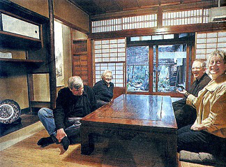

町屋ステイとは
町屋を、一棟丸ごと一定時間レンタルし、滞在先としてご利用頂けるサービスです。
旅行の滞在先としての利用は勿論、長期滞在のためのご利用も可能です。
是非当サービスを利用し、町屋で過ごす時間から古き良き京都の空気を感じて頂けますようお待ちしております。
・各町家にてチェックインの後は、一棟貸し切りで、ごゆっくりとお過ごしいただけます。
・各町家は一泊からご利用可能な貸家です。チェックイン時に、期間を定めた賃貸借契約を結んでいただきます。
